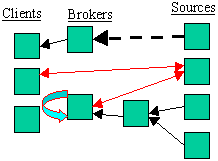
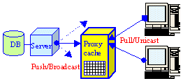
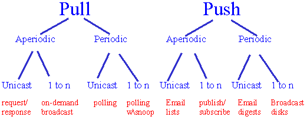
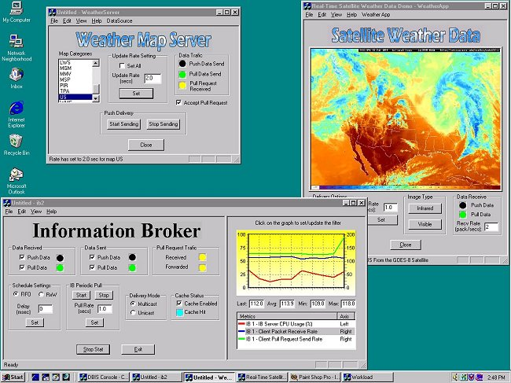

DBIS-TOOLKIT
Adaptable Middleware For Large Scale Data Delivery
System Support for Prototyping and Developing
Dissemination-Based Information Systems
DBIS Applications
| Data Dissemination: |
Common Properties: |
Problems with
Current Architectures: |
DBIS Framework
| Properties: Data Sources Information Brokers Clients |
Network Transparency:  |
Example:
Push -based Proxy Server for Pull-based Web clients |
Delivery Options
 |
Data Delivery: Push vs. Pull Aperiodic vs. Periodic Unicast vs. Broadcast/Multicast |
Main Features
Toolkit in Action -- Weather Map Dissemination

Project Members
For more information:Sponsors